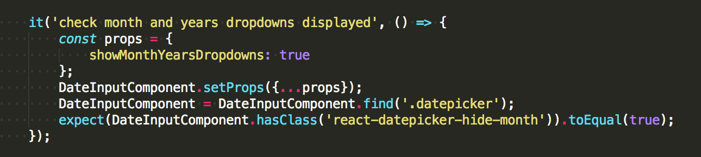
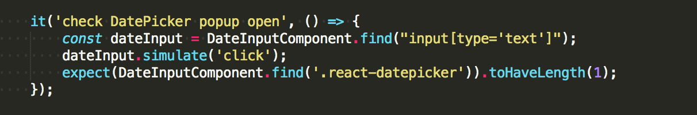

How snapshot works
1. The component has changed
- Run tests
- New snapshot is created, it compares with the stored snapshot
- Tests failed because snapshot is different

by Alyona Pysarenko
by Alyona Pysarenko
Jest is used by Facebook to test all JavaScript code including React applications.
Why Jest:
yarn test
yarn test mmp/static/js/react/shared/forms/inputs/__tests__/RadiosInput.test.js
Success
Failed
Enzyme is JavaScript Testing utilities for React
Capture snapshots of React trees to simplify testing and to analyze how state changes over time.
Step 1. Use the .toMatchSnapshot() method in expect block to create the Snapshot itself:
Step 2. Create directory __snapshots__ after first run containing autogenerated file with the extension .snap.
Snapshot view:
Step 3. Push the snapshot into the repository and store it along
with the test.
If the component has been changed, you just need to update the snapshot with —updateSnapshot flag or use the short form u flag.
1. The component has changed
2. The component has not changed

1. Testing DateInput component
Code listing on github: DateInput.js
The DateInput component uses the library react-datepicker, with two utilities:
List of default props for component rendering:
Mock date value:
Create HOC to pass defaultProps
Remember about moment-timezone
Make component wrapper before each test
Now the date input component is ready for testing:
1. Create snapshot first:
2. Testing props:

3. Test proptypes for value, date expected to be string:
4. Test events:
First, check the onChange event.
Ensure that the datepicker popup opens after a click on the date input
Full tests listing: DateInput.test.js
2. HOC testing (Higher-Order Component)
BaseFieldLayout:
Code listing for tested component: BaseFieldHOC.js
Analyzing the HOC:
component:
To mock the store, just do: const store = createStore(() => ({}));
Before each test do:
1. Create snapshot:
2. Ensure that the input component is wrapped in BaseFieldLayout after rendering:
Full tests listing: BaseFieldHOC.test.js